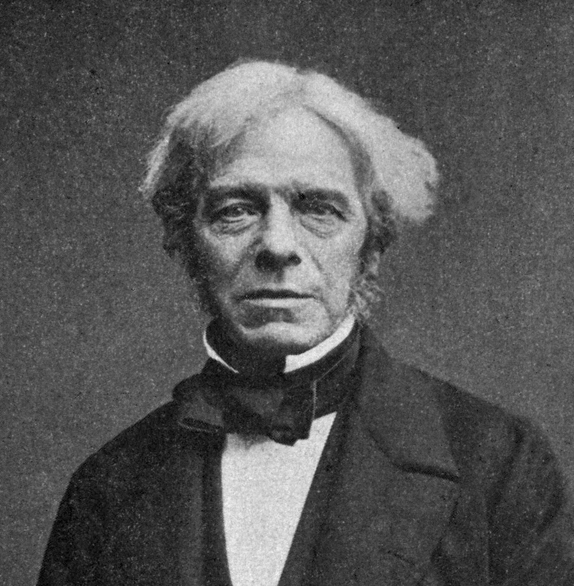

1791 - 1867 • Deneylerin Büyük Ustası
Michael Faraday, Londra'nın yoksul bir mahallesinde, demirci bir babanın oğlu olarak doğdu. Ailesinin parası olmadığı için okula gidemedi. 14 yaşında bir kitapçıda ciltçi çırağı olarak çalışmaya başladı. Ciltlediği bilim kitaplarını (özellikle kimya ve elektrik üzerine olanları) geceleri gizlice okuyarak kendi kendini eğitti. Sir Humphry Davy'nin konferanslarına katıldı ve tuttuğu notları ona göndererek asistanı olmayı başardı.
Faraday genellikle elektrikle bilinse de kimyada da devrim yaratmıştır. 1825 yılında gaz yağı artıklarını incelerken bugün organik kimyanın temeli olan Benzen'i keşfetti. Ayrıca gazları (klor gibi) sıvılaştırmayı başaran ilk kişidir.
Elektriğin kimyasal etkilerini inceleyerek "Elektroliz"i tanımladı. Bugün kimyada kullandığımız Anot, Katot, Elektrot, İyon gibi terimlerin hepsi Faraday (ve arkadaşı William Whewell) tarafından türetilmiştir. Elektroliz yasalarıyla, elektrik akımı ile açığa çıkan madde miktarı arasındaki matematiksel ilişkiyi kurdu.
Faraday'ın neredeyse hiç matematik eğitimi yoktu; formüller yerine imgelerle ve çizgilerle düşünürdü. "Kuvvet çizgileri" kavramını o hayal etti. Yıllar sonra James Clerk Maxwell, Faraday'ın bu sezgisel fikirlerini matematiksel denklemlere döktüğünde, ne kadar dahi olduğu bir kez daha anlaşıldı.
Elektriksel kapasitans birimi olan "Farad", onun onuruna isimlendirilmiştir. Albert Einstein, çalışma odasının duvarında üç kişinin resmini asılı tutardı: Newton, Maxwell ve Faraday.